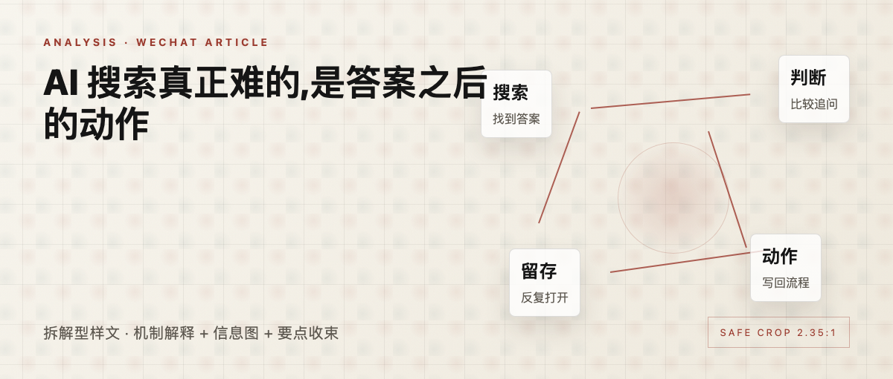
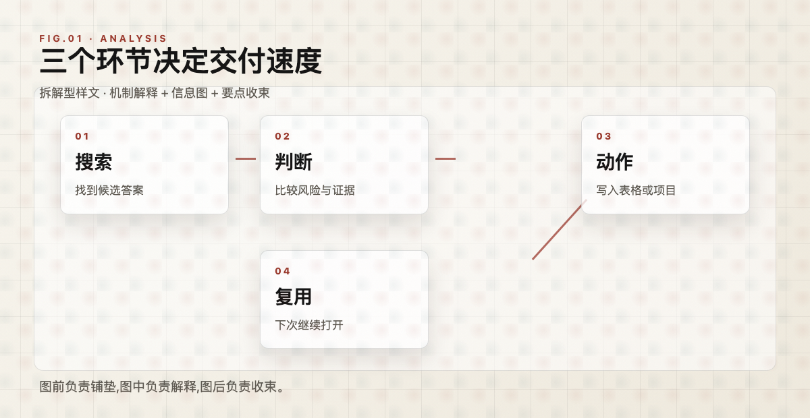

AI 搜索真正难的,是答案之后的动作
拆解型样文 · 机制解释 + 信息图 + 要点收束

样文 · AI 搜索的动作链路
过去一年,AI 搜索把“找到答案”变得更快。新的问题也随之出现:答案出来以后,用户下一步做什么?
如果系统只停在总结页面,它解决的是检索效率。用户真正花时间的地方,往往在比较、追问、记录和执行。
01
搜索结束后,工作才开始
一个采购经理查完供应商名单,还要筛掉交付不稳定的公司,整理邮件,约时间,再把内部评审材料补齐。
答案只是链路的中点。动作能不能接上,决定产品会不会被反复打开。

FIG 01 · 搜索、判断、动作的三段链路
这也是很多 AI 搜索产品开始接入表格、邮件、CRM 和知识库的原因。核心竞争会延伸到查询后的工作流。
02
好入口要减少切换
用户每多复制一次内容,每多切一个窗口,系统就多一次被放弃的机会。真正有效的入口,会把下一步动作放在答案旁边。
例如,把候选公司直接加入对比表,把风险点生成追问清单,把会议纪要写回项目页。
03
三个判断
第一,AI 搜索会从答案页走向工作台。第二,数据连接比模型口号更能留住用户。第三,真正的壁垒来自高频场景里的重复使用。
关于样文:本文为排版测试内容,用于验证拆解型公众号文章的信息图位置和段落呼吸。